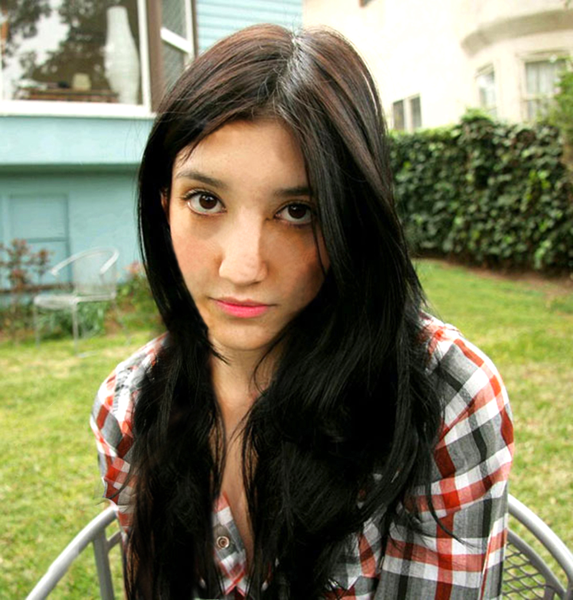

U vježbi broj osam radili smo kinemagraf. Prvo smo napravili jedan po uputama, a zatim smo napravili svoj:


U ovim vježbama manipulirali smo fontom te smo učili o osnovama vektorske grafike. Radili smo četiri vježbe te projektni zadatak na kraju.
U prvoj vježbi trebali smo napraviti vlastiti font te ispisati njime svoje ime i prezime kao i hrvatske slovne znakove:
Iduće vježbe trebali smo objaviti kao PDF dokumente te smo u njima učili o osnovama vektorske grafike:
Na kraju dolazi prvi projketni zadatak u kojem smo trebali uklopiti sve naučene elemente iz vježbi - napraviti font te u odabranom programu ilustrirati nešto na temu Flora i fauna podmorja
. Krivuljama smo napravili objekte koje bi kopirali, bojali itd. Također smo radili i različite vrste gradijenata. Ovako je ispao moj prvi projektni zadatak:
U sljedećim vježbama upoznavali smo se sa piksel grafikom. Svaku vježbu napravili bi prvo prema uputama te bi idući zadatak bio obraditi slike na naš način. Radili smo tri vježbe te drugi projektni zadatak na kraju.
Peta vježba učila nas je kako retuširati sliku, šesta kako kolorirati te smo u sedmoj učili o fotomontaži:
Dolazimo do drugog projektnog zadatka u kojem smo uklopili sve elemente iz prošlih vježbi te kreirali potpuno novu sliku. Dobili smo različite materijale koje smo trebali uklopiti u jednu sliku, odnosno bazu koju smo najprije trebali retuširati. Elemente bi izrezivali iz originalnih slika te stavljali na našu bazu. Zatim bi ih kolorirali te im stvorili sjene. Moj drugi projektni zadatak ispao je ovako:
U zadnjim vježbama bavili smo se uređivanjem videa i web stranica. Osobno ovo su mi bile najzanimljivije i najzabavnije vježbe za raditi!
U vježbi broj osam radili smo kinemagraf. Prvo smo napravili jedan po uputama, a zatim smo napravili svoj:
U devetoj vježbi montirali smo video - prvo po uputama, a zatim na naš način: